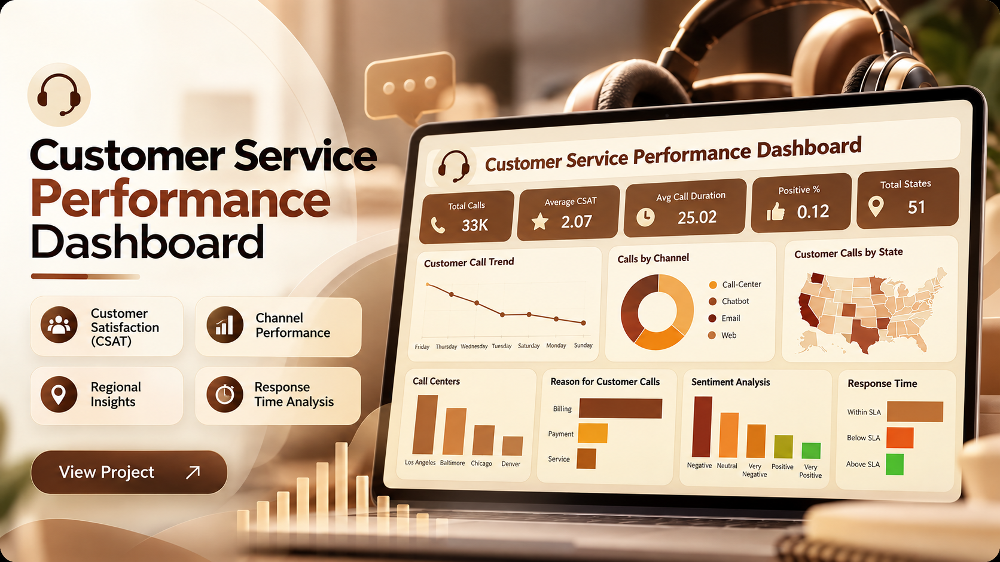

Data Analysis
Clean, explore, and interpret data to uncover useful patterns.
DATA ANALYST / BUSINESS INTELLIGENCE
I transform raw data into meaningful insights, interactive dashboards, and practical business recommendations using SQL, Python, Power BI, Excel, and PostgreSQL.
ABOUT ME
Good analysis starts with the right question and ends with a decision someone can act on.
I am a Data Analyst with an MCA background and experience in software development and business solutions. I enjoy cleaning and analyzing data, identifying trends, creating dashboards, and translating business questions into practical insights.
My core analytics toolkit includes SQL, Python, Power BI, Excel, PostgreSQL, DAX, Power Query, and data visualization.
I’m also a Microsoft Certified Power BI Data Analyst Associate (PL-300).
Lets Explore My Selected Work AreasClean, explore, and interpret data to uncover useful patterns.
Build reports and dashboards that make performance easier to understand.
Turn complex findings into clear, readable visual stories.
Connect analytical findings to practical business questions.
TOOLKIT
A practical toolkit for exploring datasets, querying databases, and communicating results.
Explore & prepare
Query & structure
Model & communicate
Organize & collaborate
EXPERIENCE
Rubixe AI Solutions
Contributing to data analysis and business reporting work, including data cleaning and validation, analytical exploration, and dashboard development where applicable.
POV Bharat(Freelance)
Developed and maintained software solutions based on business and technical requirements, contributing to application development and system improvements.
SaiCom Network
Intern Web Developer building and maintaining Web solutions from business and technical requirements.
IndiaFirst Robotics Innovation and Research
design and delivered engaging robotics curriculum, covering topics of programming, electronics, and mechanics.
SELECTED WORK
A selection of analytics projects focused on exploring data, answering business questions, and presenting findings clearly.

Explored shopping and ordering data to identify purchasing patterns, product trends, reorder behavior, peak ordering periods, and department-level insights.
View repository ↗
Explored 500 artists across genres, geography, artist type, collaborations, and debut decades using an interactive Power BI dashboard with KPIs and slicers.
View repository ↗
Analyzed customer service operations, including CSAT, communication channels, response time, regional performance, sentiment, and operational efficiency.
View repository ↗
Solved 34 business-focused SQL queries using joins, aggregations, filtering, and reporting across patient, admission, doctor, and geographic data.
View repository ↗
Analyzed customer purchasing behavior, product performance, reorder patterns, and order trends across more than one million orders.
View repository ↗
Explored Netflix movies and TV shows to uncover content distribution, genre and rating patterns, release trends, and the balance between movies and series.
View repository ↗EDUCATION & CREDENTIALS
Savitribai Phule Pune University
KTHM College,Nashik

Microsoft Certified
View credential↗International Association of Business Analytics Certification
View Credential↗
NASSCOM
View credential ↗HackerRank
View credential ↗Microsoft
View credential ↗SkillCourse
View credential ↗Simplilearn
View credential ↗Great Learning
View credential ↗Google Digital Marketing Course
Visit course site ↗CONTACT
I’m open to opportunities in Data Analytics, Business Intelligence, Reporting, and Data Analysis. If my work aligns with what your team needs, let’s connect.
Email me